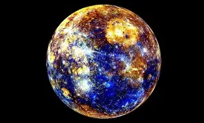

Mercure est la planète la plus proche du Soleil et la moins massive du Système solaire[N 1]. Son éloignement du Soleil est compris entre 0,31 et 0,47 unité astronomique (soit 46 et 70 millions de kilomètres), ce qui correspond à une excentricité orbitale de 0,2 — plus de douze fois supérieure à celle de la Terre, et de loin la plus élevée pour une planète du Système solaire. Elle est visible à l'œil nu depuis la Terre avec une taille apparente de 4,5 à 13 secondes d'arc, et une magnitude apparente de 5,7 à −2,3 ; son observation est toutefois rendue difficile par son élongation toujours inférieure à 28,3° qui la noie le plus souvent dans l'éclat du soleil. En pratique, cette proximité avec le soleil implique qu'elle ne peut être vue que près de l'horizon occidental après le coucher du soleil ou près de l'horizon oriental avant le lever du soleil, en général au crépuscule. Mercure a la particularité d'être en résonance spin-orbite 3:2, sa période de révolution (~88 jours) valant exactement 1,5 fois sa période de rotation (~59 jours), et donc la moitié d'un jour solaire (~176 jours). Ainsi, relativement aux étoiles fixes, elle tourne sur son axe exactement trois fois toutes les deux révolutions autour du Soleil.
Mercure est une planète tellurique, comme le sont également Vénus, la Terre et Mars. Elle est près de trois fois plus petite et presque vingt fois moins massive que la Terre mais presque aussi dense qu'elle. Sa densité remarquable — dépassée seulement par celle de la Terre, qui lui serait d'ailleurs inférieure sans l'effet de la compression gravitationnelle — est due à l'importance de son noyau métallique, qui représenterait 85 % de son rayon, contre environ 55 % pour la Terre.
Comme Vénus, Mercure est quasiment sphérique — son aplatissement pouvant être considéré comme nul — en raison de sa rotation très lente. Dépourvue de véritable atmosphère pouvant la protéger des météorites (il n'existe qu'une exosphère exerçant une pression au sol de moins de 1 nPa ou 10−14 atm), sa surface est très fortement cratérisée et globalement similaire à la face cachée de la Lune, indiquant qu'elle est géologiquement inactive depuis des milliards d'années. Cette absence d'atmosphère combinée à la proximité du Soleil engendre des températures en surface allant de 90 K (−183 °C) au fond des cratères polaires (là où les rayons du Soleil ne parviennent jamais) jusqu'à 700 K (427 °C) au point subsolaire au périhélie. La planète est par ailleurs dépourvue de satellites naturels.
Pour plus d'information, cliquez ici